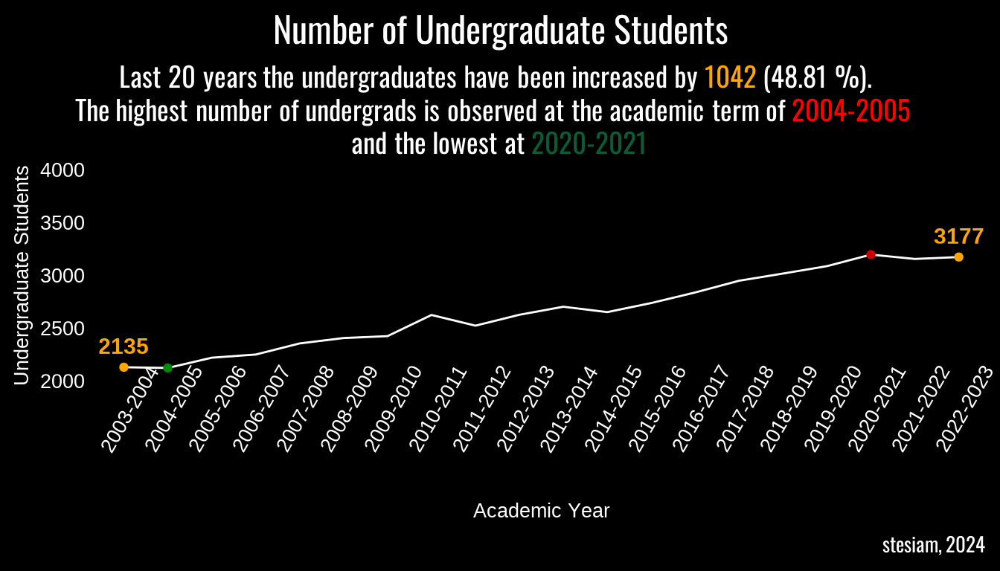
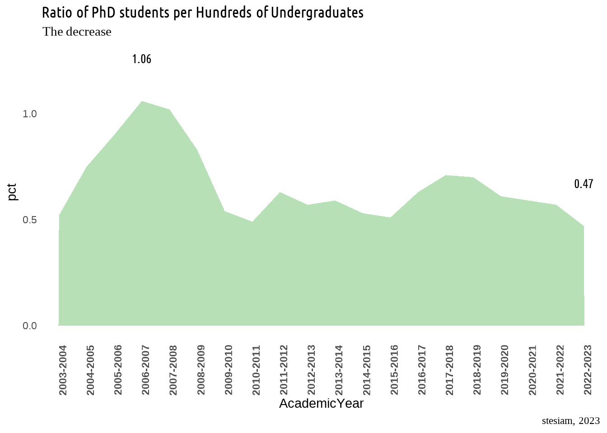
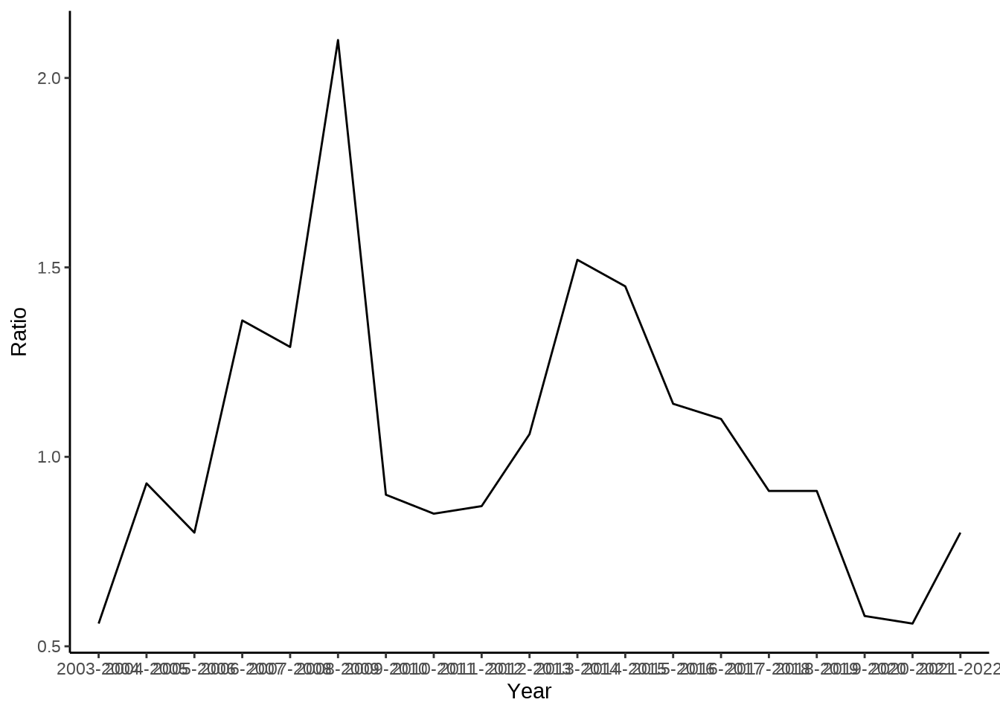
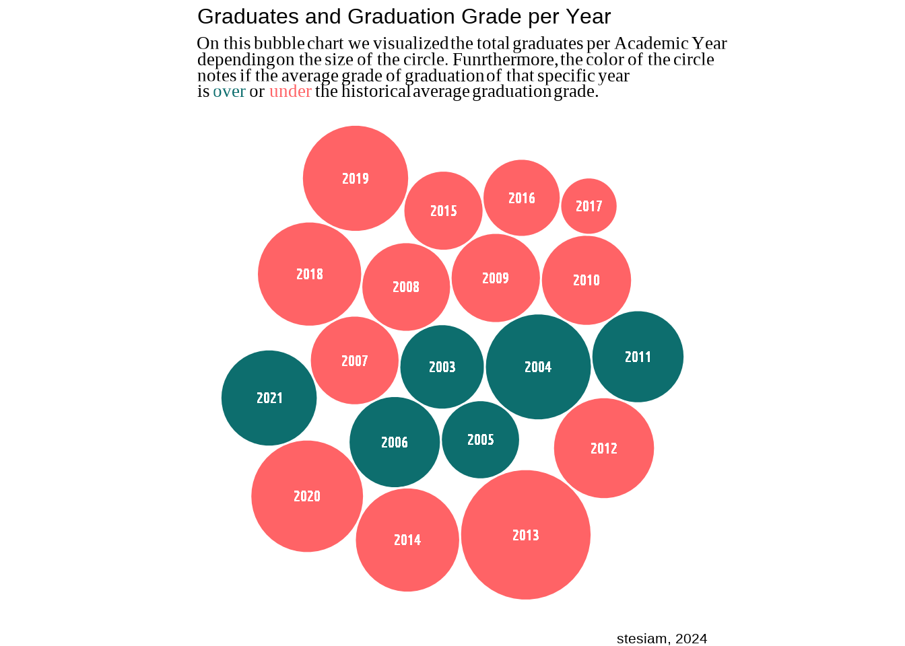

# remotes::install_github(c("ropensci/tabulizerjars", "ropensci/tabulizer"))Introduction
NOTE: Frequent updates should be expected until this note be erased.
The recent study guide includes data about the graduates and their average grade of graduation over the years. First and foremost the data we are interested in are included in table form (which is good) but is is part of a pdf file (which is not good :)). Thankfully, tabulizer is the solution to this kind of problems.
Load Packages
As I will extract tables from a pdf file, I will definitely need tabulizer package. Unfortunately, I was not able to install the specific package, as I was getting an error similar to this one. This issue seems to be related to rJava package and this comment solved the issue. After installing rJava I was able to install successufully tabulizer as below:
library(rJava)
library(tabulizer)
library(dplyr)
library(pdftools)
library(tidyr)
library(reactable)
library(ggplot2)
library(ggtext)
library(showtext)
library(glue)
library(packcircles)
font_add_google("Lobster", "lobster")
font_add_google("Economica", "economica")
font_add_google("Creepster", "Creepster")
font_add_google("Oswald", "Oswald")
font_add_google("Ubuntu Condensed", "uc")
showtext_auto()Extract Data
The study guide gives a general description of the university, as well as the prerequisites for a degree and a detailed description of each course. In total, the guide is a little bit less than 200 pages! Of course we don’t need My main source of data is the Department’s study guide. The most recent one (2022) has data on admissions, graduations etc., since 2004. The study guide gives a general description of the university, as well as the prerequisites for a degree and a detailed description of each course. In total, the guide is a little bit less than 200 pages! Of course we don’t need everything in there. I am just interested on the tables of the last pages, so I will extract those pages first from the original pdf.
# url = "https://www.unipi.gr/faculty/mbouts/anak/OS_22_23.pdf"
#
# download.file(url,
# destfile = "sg22.pdf",
# method = "wget",
# extra = "--no-check-certificate")
pdf_subset('sg22.pdf',
pages = 186:190, output = "subset.pdf")[1] "/home/stelios/stesiam.github.io/english/2023-07-23-Graduates-of-Statistics/subset.pdf"So, we extracted the pages which we are interested in. Let’s take a look at them:
Thankfully, tabulizer comes with a very handy function to extract all the tables from a PDF file. Yeap, I know the original study guide is written in greek but don’t worry that’s just to take a basic understanding of how the pdf and the tables look. I will translate the column names when I will work with the data. But look at the bright side. At least we will get a notebook with ggplot2 visualizations as an alternative of those Excel graphs :)
statistics_tables <- extract_tables(
file = "subset.pdf",
method = "decide",
output = "data.frame")Extracting the tables from splitted PDF I get a list of 5 tables with my data. It’s amazing that in a matter of seconds I get all the information in a format ready for analysis. If I were to write them the traditional way (copy-paste) it would definitely take me an hour.
Admitted students
So, in Greece there is 1 standard way to be admitted to a university. Although there are 3 more ways which require some certain conditions. I will try to explain them as simple as possible.
Main Exams
Once a year, third-year high school students from all over Greece take exams on the same subjects at the same time. The exams are known as Panhellenic Exams. Until today, it’s one of the few things in Greece that as its integrity is not disputed, as the papers of students are getting graded by teachers from other areas. However, it has also faced considerable criticism for the pressure it places on students. In my opinion a fair one as everything in your life is depending on these exams… If you fail you should wait to retake them next year.
Typically the exams are being held between the second half of May and the first week of June. The students’ grades are getting published approximately either the end of June or the first days of July. Then you are completing a list on which you are declare which departments you are interested to. On the end of July the minimum grades to be admitted for each department are announced. Those can fluctuate significantly every year as they are depending on both students’ performance on the Exams and the difficulty of the exams.
In a nutchell, the departments from big cities like Attica (Athens, Piraeus) and Thessaloniki have the biggest demand and so the minimum grades for those are higher from the rest ones. For example, the Statistics Department in Piraeus had a minimum grade of 11700 in 2019 (for simplicity consider it like 11.7/20). The corresponding department of Statistics in University of Aegean the same year had a minimum grade of 5100 (5.1/20) (yes, that’s not a typo). Well there are many reasons behind that, as the continuance of austerity in Greece, but in general that’s the pattern.
Not so fun fact but when I made my list of preference for studies, Statistics in Piraeus was something like 15th place, so I guess my fate was that. Okay and a little bit of anxiety. :)
Transfer
As I wrote earlier there are some exceptions. First of all the Admission by Transfer is referring to transfer your place in one department with one similar-study in other city. There are many criteria mainly based on your income. For example, a student admitted on Statistics on University of Aegean could be admitted on Statistics Department on Piraeus (i.e. in case his/her family hasn’t enough income).
These seats are limited.
Entry Exams
In case you have already graduated a Bachelor programme then you are able to give Entry Exams on your department of choice, instead of the nightmare of Panhellenic Exams.
admitted_students = statistics_tables[[1]] %>%
.[-1,] %>%
setNames(c("Year", "Main_exams", "Transfer", "Entry_exams", "Other", "Total"))
admitted_students$Main_exams = admitted_students$Main_exams %>% as.integer()
admitted_students$Transfer= admitted_students$Transfer %>% as.integer()
admitted_students$Entry_exams = admitted_students$Entry_exams %>% as.integer()
admitted_students$Other = admitted_students$Other %>% as.integer()
admitted_students$Pct_Non_Main = (admitted_students$Main_exams/admitted_students$Total) %>% as.double()
rownames(admitted_students) = 1:nrow(admitted_students)
admitted_students = admitted_students %>%
pivot_longer(
cols = !Year,
names_to = "Admission_Type",
values_to = "count"
)
admitted_students = admitted_students %>%
dplyr::filter(Admission_Type == "Pct_Non_Main" &
!(Year %in% c("2020-2121","2021-2022", "2022-2023"))) %>%
mutate(perc = round((1 - count)*100, digits = 2),
perc100 = 100-perc) %>%
dplyr::select(c(-Admission_Type, -count)) %>%
tidyr::pivot_longer(., cols = !Year,values_to = "Obs") %>%
dplyr::rename(
)
admitted_students %>%
reactable(
defaultPageSize = 5
)I would like to examine the percentage of students who have been admitted by the other 3 ways over the years.
ggplot(data = admitted_students, aes(x = "", y = Obs, fill = name)) +
geom_bar(stat="identity", width=1) +
facet_wrap(~Year) +
coord_polar("y", start=0) +
labs(
title = "Proportion of Admissions through Panhellenic Exams",
subtitle = glue("It seems that <span style = 'color:#619CFF; font-weight: bold'>Panhellenic Exams</span> is the prevalent way to be admitted to Statistics <br> Department. Although that was an expected result. It is interesting to study <br> the proportion over the years. The most extraordinary result is in 2011 when almost <br> everyone came through Panhellenic Exams."),
caption = "**Data:** Study Guide of Statistics and Insurance Science <br>
stesiam, 2023"
) +
theme_void() +
theme(
legend.position = "none",
plot.title = element_markdown(family = "lobster", face="bold"),
plot.subtitle = element_markdown(family = "economica"),
plot.caption = element_markdown(family = "economica")
)
# admitted_students %>%
# filter(Admission_Type %in% c("Main_exams", "Total")) %>%
# ggplot2::ggplot(., aes(x = Year, y = count, color = Admission_Type , group = Admission_Type)) +
# geom_line() +
# labs(
# title = "Admitted students",
# subtitle = "Admitted students over the years (2003-2023) at Department of Statistics and Insurance Science of <br> University of Piraeus. A significant drop in admissions occured in 2021 which is maily caused by the <br> introduction of grade requirements to be admitted to specific departments.",
# caption = "stesiam, 2023",
# x = "Academic Year",
# y = "Students",
# color = "Type of Admission"
# ) +
# theme_classic() +
# theme(
# plot.title = element_markdown(family = "lobster", face="bold"),
# plot.subtitle = element_markdown(family = "economica"),
# plot.caption = element_markdown(family = "economica"),
# axis.text.x = element_text(face="bold", angle=90)
# )Student Population
A = statistics_tables[[2]] %>%
setNames(c("Year", "BSc", "MScAppliedStat", "MScActuar", "PhD")) %>%
.[-1,] %>%
mutate_at(., vars(-Year), as.integer) %>%
tidyr::pivot_longer(., cols = !Year, values_to = "Obs")Warning: There was 1 warning in `mutate()`.
ℹ In argument: `MScActuar = .Primitive("as.integer")(MScActuar)`.
Caused by warning:
! NAs introduced by coerciond = A %>%
dplyr::filter(name == "BSc" & (Year == "2003-2004" | Year == "2022-2023"))
e = A %>% dplyr::filter(name == "BSc") %>% dplyr::filter(.,Obs == max(Obs) | Obs == min(Obs)) %>%
.$Year
sub = glue("Last 20 years the undergraduates have been increased
by <span style = 'color:orange; font-weight: bold'>{d$Obs[2] - d$Obs[1]}</span> ({round(((d$Obs[2] - d$Obs[1])/d$Obs[1])*100, digits = 2)} %). <br>The highest number of undergrads is observed at the academic term of <span style = 'color:red; font-weight: bold'>{e[1]}</span> <br> and the lowest at <span style = 'color:#0a5c36; font-weight: bold'>{e[2]}</span>" )
A %>%
dplyr::filter(name == "BSc") %>%
ggplot(., aes(x = Year, y = Obs, group = "1")) +
ylim(2000, 4000) +
geom_line(color = "white") +
labs(title = "Number of Undergraduate Students",
x = "Academic Year",
y = "Undergraduate Students",
caption = "stesiam, 2024",
subtitle = sub) +
geom_point(data= A %>% dplyr::filter(name == "BSc") %>% dplyr::filter(.,Obs == max(Obs)), aes(x = Year, y = Obs), color = "red3") +
geom_point(data= A %>% dplyr::filter(name == "BSc") %>% dplyr::filter(.,Obs == min(Obs)), aes(x = Year, y = Obs), color = "green4") +
geom_point(data = A %>% dplyr::filter(Year == "2003-2004" | Year == "2022-2023") %>% dplyr::filter(name == "BSc"), color = "orange") +
geom_text(data= A %>% dplyr::filter(Year == "2003-2004" | Year == "2022-2023") %>% dplyr::filter(name == "BSc"),aes(x = Year, y = Obs+200, label = Obs), color = "orange", fontface = "bold", size = 4) +
theme_minimal(base_size = 15) +
theme(axis.text.x = element_text(angle = 60, size = 10,color = "white"),
axis.text.y = element_text(size = 10, color = "white"),
axis.title = element_text(size = 10, color = "white"),
panel.grid = element_blank(),
plot.title = element_text(family = "Oswald", hjust = 0.5),
plot.title.position = "plot",
plot.subtitle = element_markdown(family = "Oswald", size = 14,
margin = margin(l = 10, r = 10),
lineheight = 1.2, hjust = 0.5),
plot.caption = element_markdown(family = "Oswald", size = 10),
plot.background = element_rect(fill = "black", color = "black"),
panel.background = element_rect(fill = "black", color = "black"),
text = element_text(color = "white")
)
Master Programmes
Our department has two Master options.
- Applied Statistics
- Actuarial Science and Risk Management
Year MSc_AppliedStats MSc_Actuar
1
2 2003-2004 27 15
3
4 2004-2005 28 26
5
6 2005-2006 25 20
7
8 2006-2007 25 34
9
10 2007-2008 24 31 38 0
11
12 2008-2009 20 42 36 4
13
14 2009-2010 30 27 35 21
15
16 2010-2011 20 17 40 35
17
18 2011-2012 30 26 38 30
19
20 2012-2013 18 19 37 37
21
22 2013-2014 23 35 39 63
23
24 2014-2015 20 29 38 38
25
26 2015-2016 21 24 42 39
27
28 2016-2017 20 22 33 40
29
30 2017-2018 23 21 37 30
31
32 2018-2019 22 20 29 29
33
34 2019-2020 26 15 26 24
35
36 2020-2021 32 18 27 28
37
38 2021-2022 41 33 34 59
39
40 2022-2023 31 19msc_students = statistics_tables[[2]] %>%
setNames(c("AcademicYear", "BSc", "MSc (AppliedStat)", "MSc (Actuar)", "PhD")) %>%
.[-1,]
rownames(msc_students) = 1:nrow(msc_students)
msc_students = msc_students %>%
mutate_at(c("BSc", "MSc (AppliedStat)", "MSc (Actuar)", "PhD"), as.numeric) %>%
mutate(pct = round((PhD/BSc)*100, 2))Warning: There was 1 warning in `mutate()`.
ℹ In argument: `MSc (Actuar) = .Primitive("as.double")(`MSc (Actuar)`)`.
Caused by warning:
! NAs introduced by coercionggplot(msc_students, aes(x = AcademicYear, y = pct, group = 1)) +
geom_area(fill = rgb(0.3,0.7,0.3,0.4)) +
labs(
title = "Ratio of PhD students per Hundreds of Undergraduates",
subtitle = "The decrease ",
caption = "stesiam, 2023"
) +
geom_text(data = msc_students %>% dplyr::filter(pct == min(pct) | pct == max(pct)),aes(label = pct, y = pct+0.1), fontface = "bold", family = "uc", nudge_y =0.1) +
theme_minimal() +
theme(
plot.title = element_markdown(family = "uc", face="bold"),
plot.subtitle = element_markdown(family = "serif"),
plot.caption = element_markdown(family = "serif"),
axis.text.x = element_text(face="bold", angle=90),panel.grid = element_blank()
)
Structure of Students
B = statistics_tables[[2]] %>%
setNames(c("Year", "BSc_students", "MScStudentsA", "MScStudentsB", "PhD")) %>%
.[-1,] %>%
mutate_at(., vars(-Year), as.integer) %>%
mutate(
MScStudentsB = tidyr::replace_na(MScStudentsB, 0),
MSc_Students = MScStudentsA + MScStudentsB
) %>%
dplyr::select(-c("MScStudentsA", "MScStudentsB")) %>%
relocate(., MSc_Students, .after = "BSc_students") %>%
mutate(
total = BSc_students + MSc_Students + PhD,
BSc_students = BSc_students/total,
MSc_Students = MSc_Students/total,
PhD = PhD/total
) %>%
mutate_at(vars(!c(Year, total)), ~round(.*100, 2)) %>%
dplyr::select(c(-total)) %>%
tidyr::pivot_longer(., cols = !c(Year), values_to = "Obs")Warning: There was 1 warning in `mutate()`.
ℹ In argument: `MScStudentsB = .Primitive("as.integer")(MScStudentsB)`.
Caused by warning:
! NAs introduced by coercion# C$label = fontawesome('fa-twitter')
# waffle_data <- waffle_iron(C, aes_d(group = name))
#
# ggplot(C, aes( fill = name, values = Obs)) +
# geom_waffle() +
# theme_waffle()
#
# ggplot(C, aes(fill = name, values = Obs)) +
# geom_text(aes(label=label), family='fontawesome-webfont', size=12) +
# geom_waffle(n_rows = 8, size = 0.33, colour = "white")
#
# library(waffle)
#
# # Data
# df <- data.frame(group = LETTERS[1:3],
# value = c(25, 20, 35))
#
# # Waffle plot
# ggplot(df, aes(fill = group, values = value)) +
# geom_waffle(n_rows = 8, size = 0.33, colour = "white", ) +
# scale_fill_manual(name = NULL,
# values = c("#BA182A", "#FF8288", "#FFDBDD"),
# labels = c("A", "B", "C")) +
# coord_equal() +
# theme_void()tidy_students = msc_students %>%
select(!pct) %>%
tidyr::pivot_longer(., cols = !c(AcademicYear), values_to = "count")
ggplot(tidy_students, aes(x = AcademicYear, y = count, fill = name)) +
geom_col() +
guides(fill = guide_legend(reverse = TRUE)) +
labs(
title = "Ratio of PhD students/ Undergraduates",
subtitle = "The decrease ",
caption = "stesiam, 2023",
x = "",
y = ""
) +
theme_classic() +
theme(
plot.title = element_markdown(family = "serif", face="bold"),
plot.subtitle = element_markdown(family = "serif"),
plot.caption = element_markdown(family = "serif"),
axis.text.x = element_text(face="bold", angle=90)
)Warning: Removed 4 rows containing missing values or values outside the scale range
(`geom_col()`).Master Students
statistics_tables[[3]] %>%
select(c(1,2)) %>%
setNames(c("Year", "S")) %>%
.[-c(1,2),] %>%
separate(S, c('Admitted', 'Graduated')) %>%
na.omit() %>%
mutate(Ratio = round(as.numeric(Graduated)/as.numeric(Admitted), 2)) %>%
select(Year, Ratio) %>%
ggplot(.) +
geom_line(aes(x = Year, y = Ratio, group = 1))+
theme_classic()Warning: Expected 2 pieces. Missing pieces filled with `NA` in 21 rows [1, 3,
5, 7, 9, 11, 13, 15, 17, 19, 21, 23, 25, 27, 29, 31, 33, 35, 37, 39, ...].
Graduation Grade
I hope you are still here because for the end I hold the best part. Finally, how did we perform? The study guide gives a distribution
VVV = statistics_tables[[4]] %>%
setNames(c("Year", "[5.0 - 6)", "[6, 7)", "[7-8.5)", "[8.5-10]", "AVG_Grade")) %>%
slice(-c(1:4)) %>%
mutate(across("AVG_Grade"), separate(.,AVG_Grade, into = c("AVG_Grade", "Graduates"),sep = "\\(")) %>%
select(c("Year", "AVG_Grade", "Graduates")) %>%
mutate(
"Graduates" = stringr::str_remove_all(Graduates, "\\)")
) %>%
mutate(
AVG_Grade = stringr::str_replace_all(AVG_Grade, ",", ".")
) %>%
mutate_at(vars("AVG_Grade", "Graduates"), as.numeric)data = VVV %>%
mutate(
AVG_Group = ifelse(AVG_Grade >= mean(AVG_Grade), "over", "under")
) %>%
mutate(
Year = stringr::str_remove_all(Year, "-.*")
)
packing <- circleProgressiveLayout(data$Graduates, sizetype='area')
data <- cbind(data, packing)
data <- data |>
rename(xcirc = x,
ycirc = y,
radius_circ = radius) |>
tibble::rowid_to_column('id')
# Calculate the 50 vertices points for each circle
dat.gg <- circleLayoutVertices(packing, npoints=50)
final_data <- left_join(data, dat.gg, by = join_by(id))ggplot(data = final_data) +
geom_polygon(aes(x,
y,
group = Year,
fill = AVG_Group,
text = Graduates),
colour = "white",
# alpha = 0.7
) +
scale_fill_manual(values = c("under"="red","over" = "green"))+
geom_text(aes(xcirc,
ycirc,
size = Graduates,
label = Year),
size = 3,
family = 'uc',
fontface = 'bold',
color = 'white') +
labs(title = "Graduates and Gradaution Grade per Year",
subtitle = "On this bubble chart we visualized the total graduates per Academic Year <br> depending on the size of the circle. Funrthermore, the color of the circle <br> notes if the average grade of graduation of that specific year <br> is <span style = 'color: green'>over</span> or <span style = 'color: red'>under</span> the historical average graduation grade.",
x = NULL,
y = NULL,
caption = "stesiam, 2024") +
coord_equal() +
theme_void(base_size = 10) +
theme(
legend.position = "none",
plot.subtitle = element_markdown(family = "serif")
)Warning in geom_polygon(aes(x, y, group = Year, fill = AVG_Group, text =
Graduates), : Ignoring unknown aesthetics: text
Online vs On-campus Exams
Due to pandemic COVID-19, Greek government suspended the operation of schools (elementary, high school, universities) on Tuesday 10 March 2020. Some days later imposed lockdown measures. That period our department organized online lectures and organized online exams for the majority of the courses on Spring Semester and on the September (retake exams). Long story short that lasted for at least 2 years.
Students Graduated in 6 Years
Last but not least, maybe the most nervewrecking statistic is that one.
statistics_tables[[5]] %>%
setNames(c("Year", "4Years", "5Years", "6Years", "7Years", "8Years", "9Years",
"10Years", "11YearsPlus", "avg_Years")) %>%
slice(-c(1:2)) %>%
slice(-c(seq(from = 2, to = 28, by = 2))) %>%
tidyr::pivot_longer(., cols = !c("Year","avg_Years"), names_to = "Obs") %>%
mutate(
Obs = stringr::str_remove_all(Obs, pattern = c("Y.*")) %>% as.numeric(),
value = value %>% as.numeric()
) %>%
group_by(Year) %>%
mutate(
s = sum(value),
pct = round((value/s)*100, digits = 2)
) %>%
mutate(
Category = ifelse(Obs<=6, "A", "B")
) %>%
group_by(Category, Year) %>%
summarise(
total_pct = sum(pct)
) %>%
tidyr::drop_na(total_pct)`summarise()` has grouped output by 'Category'. You can override using the
`.groups` argument.# A tibble: 26 × 3
# Groups: Category [2]
Category Year total_pct
<chr> <chr> <dbl>
1 A 2009-2010 60.7
2 A 2010-2011 56.9
3 A 2011-2012 55.7
4 A 2012-2013 56.1
5 A 2013-2014 55.2
6 A 2014-2015 67.2
7 A 2015-2016 51.7
8 A 2016-2017 31.9
9 A 2017-2018 41.2
10 A 2018-2019 25.9
# ℹ 16 more rowsJust for clarification, our studies are 4-Year studies. Although the majority will not successfully finish their degree even in 6 Years. This is important as currently has been voted the time-limit on BSc studies. We have 6 years to complete our studies otherwise we will not take the degree. In the next years, the best case scenario is that 60% of my collegeaus who were about to graduate will not get their degree.
Acknowledgements
Dataset based on recent study guide recent study guide of Department of Statistics and Insurance Science of the University of Piraeus.
Image by Victoria Loveland from Pixabay
References
Citation
BibTeX citation:
@online{2023,
author = {, stesiam},
title = {Statistics of {Statistics’} {Graduates}},
date = {2023-07-23},
url = {https://www.stesiam.github.io/english/2023-07-23-Graduates-of-Statistics/2023-07-23-Graduates-of-Statistics.html},
langid = {en}
}
For attribution, please cite this work as:
stesiam. (2023, July 23). Statistics of Statistics’ Graduates. Retrieved
from https://www.stesiam.github.io/english/2023-07-23-Graduates-of-Statistics/2023-07-23-Graduates-of-Statistics.html